Variables en JavaScrip
En cualquier lenguaje de programación el concepto de "variables" no se difenrecia, se trata de un espacio en memoria que se designa para guardar un dato.
Existen diferentes tipos de variables de acuardo cual sea el tipo de dato que se almacenara en esta, JavaScrip tiene la caracteritica de ser un lenguaje dinamico, esto significa que no es necesario declarar el tipo de forma que esta se corresponda de acuardo al tipo de dato que va a almacenar, ya que como lenguaje dinamico este define por si solo el tipo de varible que se utilizara en base al dato a almacenar.
Tipos de Datos en JavaScrip
String
-
Este tipo de dato consiste en una cadena de caracteres, es decir almacena una secuancia de caracteres pre-establecida, como pudise ser por ejmplo un texto
La sintaxis de JavaScrip discta que los datos que seran guardar dentro de una string deben de declararse utilizando comillas dobles (" "), comillas simples ( ' ') o ( ´ ´) de la siguiente forma:
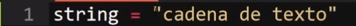
Nota: Los espacios en blancos se conservan dentro de un string, ya que tambien es considerado un caracter.
Por lo tanto, cualquier caracter que se indique entre comillas sera guardado como un string por JavaScrip
Nota: Es posible incluir cualquiera de estas comillas como parte de la cadena de texto, lo unico que se requiere es que sean diferentes a las comillas que se esten utilizando para delimitar la cadena de texto en ese momento, por ejemplo si se quiere mostrar comillas simples('') en la cadena de texto se utiliza comillas dobles ("") o invertidas (``) para delimitar el texto.
Comillas Invertidas (``)
En el caso de los string no hay deferencia entre utilizar comillas simples o dobles, no obstante el uso de las coomillas invertidas (``) ofrese ciertas particularidades unicas:
-
incluir variables dentro de cadenas de texto
Esta es una posivilidad unica de las comillas invertidas, así como una forma de concatenación, consisten en definir el texto de la cadena con comillas invertidas (``) y dentro de este incluir la variable utilizando el simbolo de dolar ($) y las llavez ( { } ) para delimitar el incio y fin de esta, de la siguiente forma:
Ejemplo
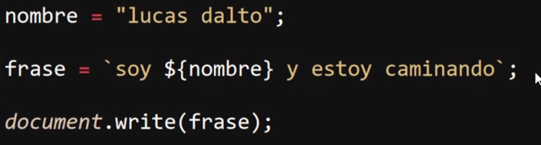
Resultado
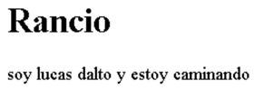
-
Cadenas de texto con salto de lineas
Se trata de otra caracteritica de estas comillas, y es que permiten el incluir el salto de linea como una parte de la cadena de texto:
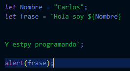
Por lo tanto los saltos de linea conformaran parte de la cadena de texto, generando entonces saltos de linea en el valor final:
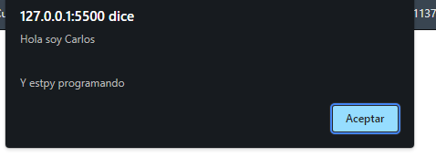
-
Generar codigo HTML
Las comillas invertidas tambien permiten almacenar codigo HTML ejecutable por el navegador, en otras palabras podemis almacenar codigo HTML dentro de un String y este puede ser ejecutado por el navegador con normalidad, de la siguiente forma:
Ejemplo
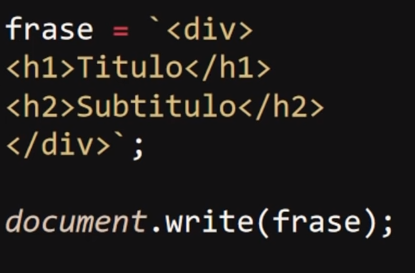
Resultado
Number
-
Estos dato consisten en valores numericos, para indicarlo como tal simplemte se necesita escribir el numero en sí, ya que esta no emplea nungun simbolo para indicarse como number, escribiendo el numero por si solo es la forma correcta indicar el dato, de la siguiente forma:
Nota: Si se llegase a utilizar comillas al guardar el dato este valor seria tratado como un conjunto de caracteres en vez de un numero lo que inposivilitaria su uso en operaciones matematiacas
boolean
-
Este tercer tipo de dato realmete es más simple, ya que unicamente puede almacenar dos valores los cules son "true" (el cual indica que un valor es cierto) o "false" (El cual indica que un valor es falso), de la siguiente forma
Tipos de Varibles y su Alcanse (Scope)
Se utilizan palabras clave programadas para indicar las disponibilidad de la varible dentro del bloque de codigo, esto quiere decir que estas palabras claves definene en que zonas del codigo estaran disponibles las varialbes para los elemtos, en JavaScrip existen tres tipos de variables, las cuales son:
Let
-
Este tipo de variable establese que esta unicamente estara disponible dentro del bloque de codigo en la que esta allá sido declarada, por lo tanto no sera accesible para todos aquellos elemetos que se encuentren fuera de este.
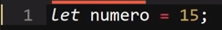
Este es el tipo de variable con el que se recomienda trabajar en la mayoria de los casos ya que al tener menos alcanse afecta menos el funcionamiento de los datos.
var
-
Este tipo de variable establese que el dato almacenado en esta estara disponible para todos los elemetos del codigo, independistemente del bloque de codigo en la que estos se encuentren, por lo que se puede considerar como una "varible Global".
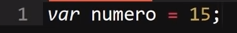
const
-
Se trata de un tipo particular de variable ya que por rendundante que sea esta se trata de una variable inalterable, es decir que una vez que sea definido una valor para esta, dicho valor no podra modificarse nuevamente, por ello se utiliza para almacenar datos que se tengan la certesa de que no cambiaran en ningun momento.
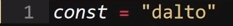
Nota: El intentar modificar una variable "const" resultaria en una alerta de error dentro de la consola de desarrollador.
Declaración Inicialización y Modificación de una varible
Declarar una Variable
-
Para declarar una varible unicamente es necesario el indicar el nombre y el alcanse que tendra esta, es decir inicializar una varible es igual a crearla de forma que esta exista dentro del codigo pero sin atribuirle ningun valor, resiltando en una variable "indefinida" o "undefined", ya que no posee un valor hasta el momento.
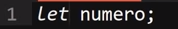
-
Existen dos alternatias a la hora de declarar las varibles, esto se puede hacer ya sea declarando varias en una sola declaración utilizando una coma (,) para separa cada variable, ahorrando codigo de esta formaº:
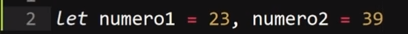
O tambien se pueden genenrar una declaración en particular para cada variable priorixando así la indentación del codigo:
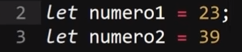
Inicializar una variable
-
Simplemte se trata de asignar un valor a la varible, solo con eso la varible ya se encuantra inicializada.
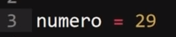
Una caracteritica particular de las "const" es que en estas no esposible el declararla y inicializarla por separado, en estas varibles es necesario el indicar su valor a la vez que estas son declaradas, de lo contrario se generara un error en la consola de desarrollador.
Modificar una Varible
En JavaScrip para Modificar una varible simplete es necesario el asignarle un nuevo valor a la varible ya existente
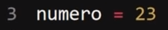
Nota: Recordar que esto solo se puede hacer con las varibles "var" y "let", ya que las "const" son inalterables una vez inicializadas.
Casos Especiales de Datos
undefined
-
Se trata de un tipo de dato especial el cual indica que una varible se encuentra declarada paro no a sido inicializada, es decir que dicha varible existe pero no a sido asignado ningun dato en esta por lo que se encuantra "sin definir", es decir que hasta el momento no posee un valor.
Null
-
En javaScript este tipo de dato significa "vacio o nulo" y indica que una varible esta definida como nula en alguna circunstancia, por lo que no debe de poseer valor alguno.
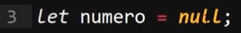
Nota: en javaScript "Null" significa nula o vacia, sin embargo en algunos lenguajes esto no es así, y indicar una variable como nula o vacia son dos cosas diferentes.
Nan
-
Nan Significa "Not a Number" es decir no es un numero, este valor especial indica que se esta esperando una dato numerico para realizar algun tipo de operación pero en su lugar se esta recibiendo algun otro tipo de dato que inposivilita el calculo, es decir este tipo de valor señala que a ocurrido un error debido a la recepción de un dato que no es un numero.
Arrays
Se tratan de conjuntos de memoria que pueden almacenar multiples datos y de diversos tipos, en palabras simples un "array" es una varible que no esta limitada a almacenar un unica dato si no que puede almacenar multitud de estos sin importar el tipo de dato del que sean.
En un "arrays" los elemetos que se almacenen se enumeran segun el orden en los que estos sean ingresados, con la particularidad de que se empiezan a enumerar desde el cero (0) y no desde el uno(1) como podria esperarse, por lo tanto el primer elemeto en el "array" responde al identificador cero (0), el segundo al identificador (1) y asi sucesibamente.
Para delclarar un array se indica de la misma forma que con una varible, primero se define su tipo (let, var, const), luego se define el nombre de este seguido del simbolo igual (=), de aquí en más se diferencia de las variables, ya que en lugar de simplemte ingresar los datos es necesarios abrir corchetes ( [ ] ) y dentro de estos se inctroducen todos los datos se desee, separados entre si por comas (,), de la siguiente forma:
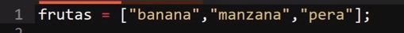
En este ejemplo el dato "banana"(primer dato) ocupa la posición cero (0), "manzana" la posición uno (1) y "pera" la posición dos (2).
Extraer los datos de un Array
Debido a que un array alverga multiples datos surge la problematica del como extraer unicamete el dato que sea necesario para su uso, para esto se utiliza la enumeración de los datos del array, por lo tanto se realiza el llamado del array seguido de corchetes y dentro de estos el numero de identificador del dato seleccionado.
Ejemplo
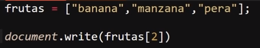
Resultado
En este ejemplo se muestra el tercer dato en pantalla, el cual es enumerado por el numero dos (2).
Nota: En el caso de que en este ejemplo se selecionase el identificador numero tres (3) o cualquier otra posición sin asignar un dato, el array retornaria un "undefined", ya que al estar declarado el array todas sus posibles posiciones tambien lo estan, simplemte no se les a asigado un dato.
Arrays Asociativos
Se trata de un tipo de array con un funcionamiento muy similar al anterior, con la particularidad de que estos le permiten al programador el personalizar la configuración de la numeración del los elemetos del array, es decir este tipo de array permite modificar la numeración tradicional (0, 1, 2, ...) y en su lugar definir un nombre para cada elemento del array, por lo tanto para extraer los datos desde un array asociotivo es necesario conbocar al respectivo dato empleando el nombre definido para este, del mismo modo al ingresar los datos en este tambien es necesario definir el respectivo nombre de cada dato.
Ejemplo
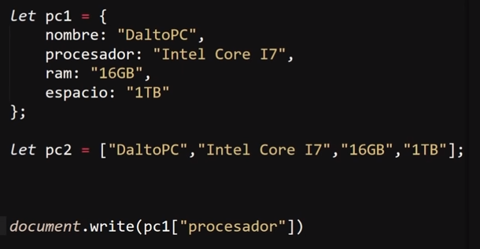
Resultado
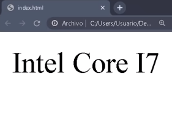
En este ejemplo la varible "pc1" corresponde a un array Asociativo, del cual se extrae su segundo dato, el cual esta definido con el nombre de "procesador"
En otras palabras del mismo modo que toda variable tiene nombre un array asociativo permite definir un nombre para cada dato dentro de este y convocar el dato utilizando su respectivo nombre y no la numeración del dato.